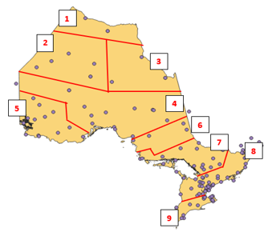

Downloaded the entire weather stations data of Canada from Google as a KML file (https://www.google.com/maps/d/viewer?msa=0&dg=feature&mid=1zXdPVrRpsXd37wTN3nzcF fCQgdE&ll=47.12315462087478%2C-78.23151418166714&z=5) then exported our study area as a layer on its own. This Layer was then brought to the map and clipped with the weather stations data to extract the weather stations in Ontario.
We automated the download of weather data according to weather stations in Ontario, extracting the data and stored them in PostGIS postgresql databse. This data contains other information and details like precipitation, humidity, but our main focus is on wind speed and temperature. The information automatically saved in the database has temperature and wind speed record for all the weather stations in Ontario. The database was then connected to QGIS and the data brought over as a layer for spatial analysis to decipher the best interpolation methods.
We created two CSV files holding the latitude, longitude, and station codes of weather stations within our study area. These files would then be used in the ETL automation script. The script downloads hourly weather station data from this Government of Canada website: 'https://dd.weather.gc.ca/nowcasting/matrices/' using the python URLLIB module, unzips the downloaded file, and converts it to a text file.
PyQGIS is a framework that allows you to run QGIS processes in python. To run QGIS processes in python, we needed to set our python interpreter to the python-qgis.bat interpreter. The same python script used in the ETL procedures above automates the interpolation process using PyQGIS by first converting the CSV file into a point layers, coverting the numerical columns stored as string to double, adds new columns to store the temperature and wind numerical values. The script then performs a series of IDW interpolations for both temperature and wind over the nine different regions of our study area.
We split the province of Otario into nine sub-regions and generated interpolation models for all nine different sub-regions. This was done to improve the accuracy of the IDW interpolation model by limiting the interpolation model to only weather stations with a specific sub-region and not just general classification or aggregation of Weather station points.
The Ontario weather web application displays weather information for all of Ontario. It has been designed to retrieve weather information stored on the server and report the current weather details according to the selected location. This is done by retrieving the GeoJSON files previously created, using jQuery. The jQuery GET function is initiated after a user selects a point on the map. When a user selects a point on the map the latitude and longitude coordinates are recorded and roundedboth up and down to the nearest 0.4 degrees to get the corresponding tile extents. These values would then be concatenated to match the format of the GeoJSON files That concatenated file name would then be used in the jQuery request, which will bring in the GeoJSON file. Before the GeoJSON file can be used for its information, a single point must be selected from this file. There are typically 100 points in each of these files, and the point closest to the selected point must be selected to take the data from. This is done using a for loop that iterates through each record in the file and calculates the distance between each point and the selected point, using Pythagorean theorem. The index number of the closet point is saved, and then used to retrieve the location specific weather data. Once the script knows which point is the closest the script will display the corresponding weather information. This information is the current temperature and wind, and the forecasted temperature and wind values for the next 5 hours.
Using python for automating tasks turned out to work very well for our purposes. We were able to do all the pre-processing within a python script that automatically runs every hour (with task scheduler). This includes command line prompts (which originally, we were planning to do outside of python with PowerShell). The runtime of our entire python script takes approximately 80-90 seconds to complete. Once we set up our python pre-processing script, we created a batch file that runs this script at the top of every hour. If the script doesn’t find a corresponding URL, it will sleep for 5 minutes (and repeat until successful). The script runs smoothly, and most of the processing time revolves around the QGIS tools being run.